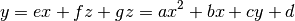
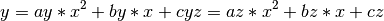

API¶
-
class
brain(filepath)¶ Object to manage biological data and associated functions. Initialization of this object automatically reads the hdf5 file and selects the appropriate channel from the Probability file and saves as global
brain.raw_dataattribute.Parameters: filepath (str) – Filepath to hdf5 probability file Returns: brain.raw_dataReturn type: 3D array -
raw_data¶ Array of shape [z,y,x] containing raw probability data
-
df¶ Dataframe with four columns: x,y,z,value with all points in
brain.raw_data
-
threshold¶ Value used to threshold the data prior to calculating the model
-
df_thresh¶ Data frame containing only points with values above the specified threshold
-
model¶ Dictionary containing the coefficients for the parabolic model of the data
-
subset¶ Random sample of the dataframe from
brain.df_thresh
-
-
brain.read_data(filepath)¶ Reads 3D data from file and selects appropriate channel based on the assumption that the channel with the most zeros has zero as the value for no signal
Parameters: filepath (str) – Filepath to hdf5 probability file Returns: Array of shape [z,y,x] containing raw probability data
-
brain.show_plane(dimension, plane)¶ Displaces single specified plane in a matplotlib figure
Parameters: Returns: Matplotlib figure
-
brain.create_dataframe()¶ Creates a pandas dataframe containing the x,y,z and signal/probability value for each point in the
brain.raw_dataarrayReturns: brain.dfReturn type: Dataframe with four columns: x,y,z,value
-
brain.fit_model(threshold)¶ Calculates the mathematical model of the data by identifying the flat plane and parabolic plane that can fit the data before calculating their intersect
Parameters: threshold (float) – float value between 0 and 1, used to select lower bound of values Returns: brain.modelReturn type: dictionary containing the coefficients for the parabolic model of the data
-
brain.find_distance(t, point)¶ Find euclidean distance between a point on the line defined by t and a data point
Parameters: Returns: distance between the two points
Return type:
-
brain.find_min_distance(row)¶ Find the point on the curve that produces the minimum distance between the point and the data point using scipy.optimize.minimize(
brain.find_distance())Parameters: row (pd.Series) – row from dataframe in the form of a pandas Series Returns: point in the curve (xc, yc, zc) and r Return type: floats
-
brain.find_alpha(xc, yc, zc)¶ Find alpha which is the angle that specifies the position of the point along the curve
Parameters: Returns: alpha, angle along the curve
Return type:
-
brain.dist_to_plane(xz, row)¶ Find shortest distance between point and the plane
Parameters: - xz (list) – List of form [x position, y position]
- row (pd.Series) – row from dataframe in the form of a pandas Series
Returns: Distance between the specified point and the plane
Return type:
-
brain.find_theta(row, yc, zc)¶ Calculate theta for a row containing data point in relationship to the flat plane
Parameters: - row (pd.Series) – row from dataframe in the form of a pandas Series
- r (float) – Shortest distance between the point and the math model
Returns: theta, angle between point and the flat plane
Return type:
-
brain.calc_coord(row)¶ Calculate alpah, r, theta for a particular row
Parameters: row (pd.Series) – row from dataframe in the form of a pandas Series Returns: pd.Series populated with coordinate of closest point on the math model, r, theta, and alpha Return type: pd.Series
-
transform_coordinates()¶ Transform coordinate system so that each point is defined relative to math model by (alpha,theta,r) (only applied to df_thresh
Returns: appends columns r, xc, yc, zc, alpha, theta to brain.df_thresh
-
brain.subset_data(sample_frac)¶ Takes a random sample of the data based on the value between 0 and 1 defined for sample_frac
Parameters: sample_frac – Value between 0 and 1 specifying proportion of the dataset that should be randomly sampled for plotting Type: float or none Returns: brain.subset
-
brain.plot_model(sample_frac=0.5, cmap='plt.cm.Greys')¶ Plot two planes, line model, and percentage of points. Data is downsampled based on the value between 0 and 1 defined for sample_frac
The returned plotly figure object can be most easily visualized using `plotly.offline.iplot(fig,filename=’example’)
Parameters: sample_frac – Value between 0 and 1 specifying proportion of the dataset that should be randomly sampled for plotting Type: float or none Returns: Plotly figure object
-
class
plane(model, xx, yy, zz)¶ Class to contain model and data associated with a plane
Parameters: -
model¶ OLS fitted model
-
xx¶ Meshgrid array of x dimension
-
yy¶ Meshgrid array of y dimension
-
zz¶ Meshgrid array of z dimension
-
-
class
math_model(coef)¶ Class to contain attribues and data associated with math model
Parameters: -
coef¶ Dictionary containing coefficients of each term of math model such that:

-
p¶ Dictionary containing coefficients of terms in math model such that:

-
x¶ Array containing x coordinates of model
-
y¶ Array containing y coordinates of model
-
z¶ Array containing z coordinates of model
-
vx¶ x position of the vertex
-
vy¶ y position of the vertex
-
vz¶ z position of the vertex
-
fx¶ x position of the focus
-
fy¶ y position of the focus
-
fz¶ z position of the focus
-
-
math_model.calc_y(t)¶ Calculate y value according to a given t
Parameters: t (float) – t value along the curve Returns: y value corresponding to t Return type: float
-
math_model.calc_z(t)¶ Calculate z value according to a gien t
Parameters: t (float) – t value along the curve Returns: z value corresponding to t Return type: float
-
math_model.find_vertex()¶ Calculates the position of the vertex
Returns: math_model.vx,math_model.vy,math_model.vz
-
math_model.find_foucs()¶ Calculates the position of the focus
Returns: math_model.fx,math_model.fy,math_model.fz